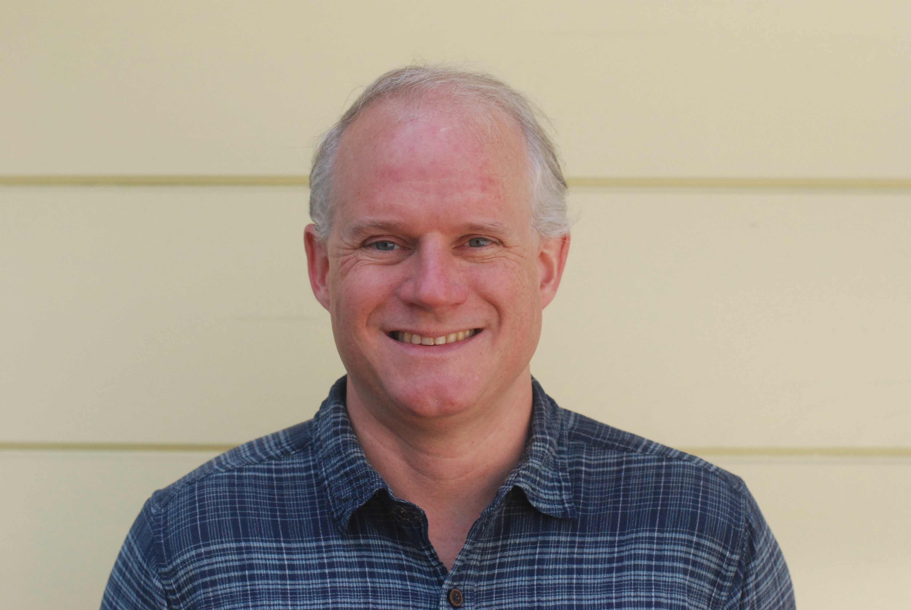
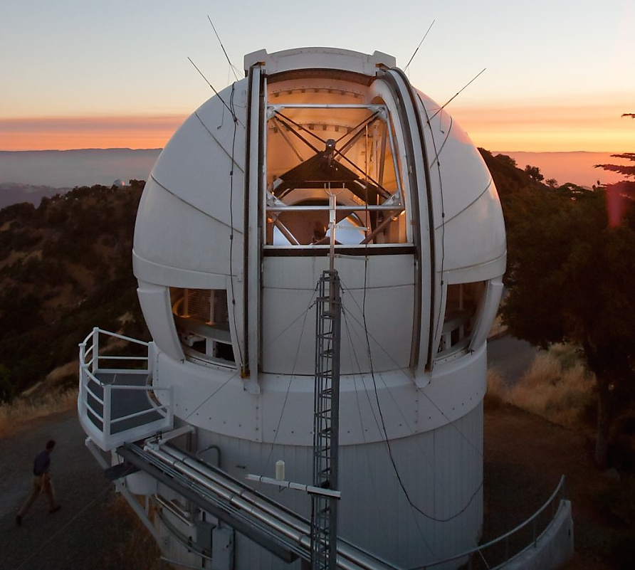
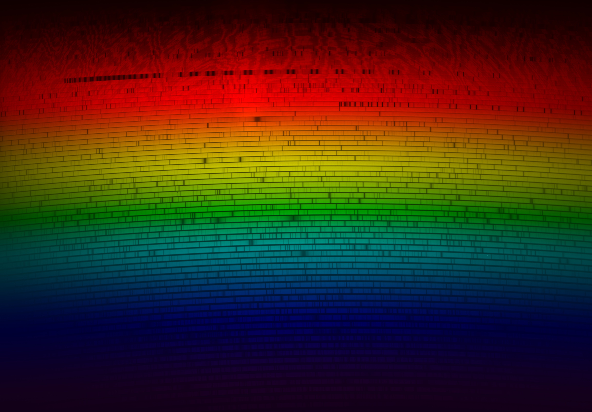
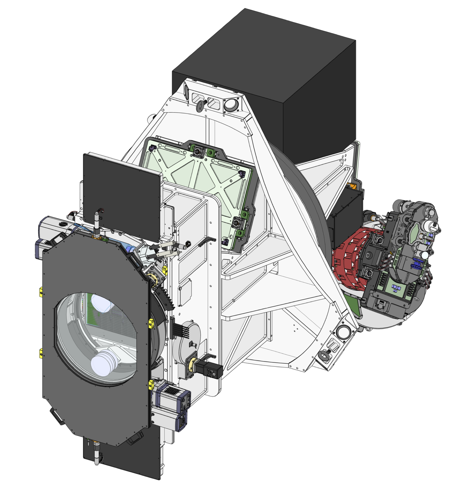

Instruments
New spectrographs and Telescope Operations
Working for the University of California Observatories, I develop new instruments such as LRIS-2 and STRATA, improve existing ones, and write software to support those instruments such as KPF.
UC Observatories · Lick Observatory · UC Santa Cruz
I write the software that runs instruments and telescopes, help build new instruments, and reduce the data we collect from them.

Instruments
Working for the University of California Observatories, I develop new instruments such as LRIS-2 and STRATA, improve existing ones, and write software to support those instruments such as KPF.
Exoplanets
I help run the Automated Planet Finder, so I work on finding and characterizing planets around nearby stars, and simulating what future surveys and missions will be able to detect.
Software for Astronomical Data
Developing and maintaining software that helps astronomers analyze and interpret their data, from image processing to spectral analysis, such as PypeIt.



Most of my software is public. These are the projects I lead or maintain.
PypeIt
PypeIt is a Python spectroscopic data reduction pipeline.
Python
lickRemoteObserving
Remote observing software for the Lick Observatory telescopes.
Python
UCOmain
The specialized collection of software that runs the Automated Planet Finder telescope on a nightly basis.
Python
expcalc
expcalc is an exposure time calculator web service for Keck and Lick Observatories.
Python
obscalc
obscalc is a Python package for exposure time calculations for observatory instruments, a backend for expcalc.
Python
ThereMightBeGiants
ThereMightBeGiants is a project lead by Jennifer Burt, actual exoplanet science!.
Python